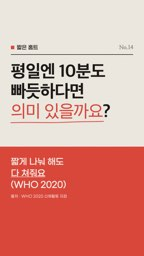

14번 영상
평일엔 10분도 빠듯하다면 의미 있을까요?
쿠팡 링크는 아직 준비 중이에요. 아래 비교는 지금 바로 읽을 수 있어요.
바쁜 평일이라면 체크 3개
짧게 나눠 해도 다 쳐줘요 (WHO 2020) (WHO 2020 신체활동 지침)
이런 주라면 체크
평일엔 시간이 없는 직장인
- 짧게 나눠도 (10분 조건 없음)
- ✔ 짧게 해도 다 쳐줘요
- ⚠ 이번 주 합계 몇 분?
- 고강도로 줄이기 (1분 = 2분)
- ✔ 고강도 1분 =중강도 2분
- ⚠ 처음부터 고강도 X
- 근력도 챙기기 (주 2일↑)
- ✔ 근력운동 주 2일↑
- ⚠ 이번 주 몇 번 했나
WHO 2020(BJSM 11-23) · 질병관리청 2026-07-27